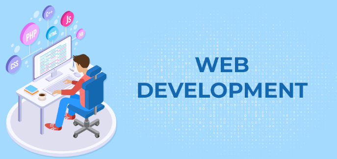
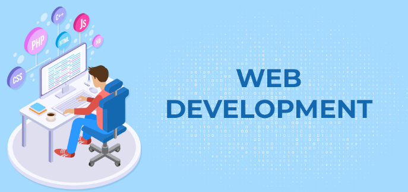

Web development We create responsive and dynamic websites and digital systems tailored to your needs.


YOU'RE ONE STOP SOLUTION FOR -DIGITAL TRANSFORMATION ANDINOVATION.
We deliver cutting -edge solution to bring your version to life.
We aim to create dicentralized and secure enviroment
Where user can manage their digital identity,
enhance their online presence, and
participation in a vibrent economy throung unique features.
Register Now. |

|
|
|
|
Integration and Support
Ensure smooth integration of
new systems with existing infrastructure.
Offer ongoing technical support, maintenance,
and updates to keep systems
running efficiently over time. |
We delivers innovative digital solutions across agriculture, education, health, and various business sectors, empowering clients to achieve their goals through
Our product

Web development We create responsive and dynamic websites and digital systems tailored to your needs.